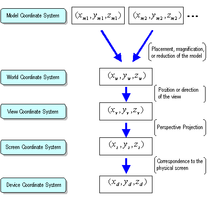

A vertex defined in a model coordinate system is converted to other coordinate systems and displayed. The following illustration gives a summary of the flow of this conversion process:

Moving from one coordinate system to another is called "coordinate transformation." The coordinate transformation processes are represented by arrows in the illustration. The actual coordinate transformations are easily accomplished by using matrix calculations which will be described later.
Nintendo® Confidential
Copyright © 1999
Nintendo of America Inc. All Rights Reserved
Nintendo and N64 are registered trademarks of Nintendo
Last Updated March, 1999